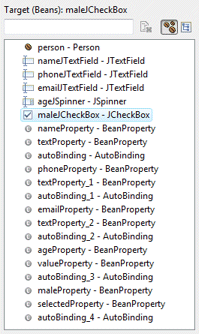
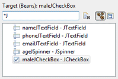
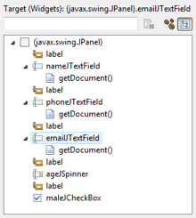
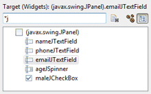
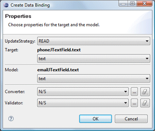
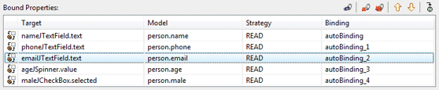
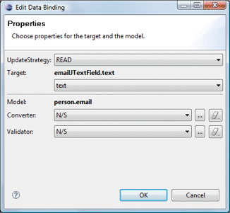

Click the Bindings tab in the editor to created and edit data bindings.

Swing uses simple bindings between targets and models.
Two types of targets and models are supported:
 Beans: any field of the current compilation unit may be selected.
The filter field above the list can be used to filter the list of beans.
The
Beans: any field of the current compilation unit may be selected.
The filter field above the list can be used to filter the list of beans.
The
 clear button can be used to clear the filter and restore the full list.
Beans are the primary data source for bindings (usually the
model). Any property of the Bean may be observed. Individual
beans may also be expanded to reveal their direct sub properties.
clear button can be used to clear the filter and restore the full list.
Beans are the primary data source for bindings (usually the
model). Any property of the Bean may be observed. Individual
beans may also be expanded to reveal their direct sub properties.


 Widgets: any widget in the current compilation unit may be selected.
If a widget is not a field, it will be converted to a field
automatically. The filter field above the list can be used to filter the
list of widgets. The
Widgets: any widget in the current compilation unit may be selected.
If a widget is not a field, it will be converted to a field
automatically. The filter field above the list can be used to filter the
list of widgets. The
 clear button can be used to clear the filter and restore the full list.
Any property of the Widget may be observed.
clear button can be used to clear the filter and restore the full list.
Any property of the Widget may be observed.


When any Target or Model object is selected, its properties (bean fields or standard Swing widget properties) are shown in the associated Properties list. Properties may be expanded to show their nested attributes. A drop down filter menu is available to filter the Property list by type and hide or show the advanced properties. Supported filters are String, Boolean, Numbers, Color, Font and Image.


New bindings are created by selecting a Target, a
Target Property, a Source, a Source Property and
clicking the
 Bind button. When creating a binding, the update strategy from
target to model and model to target may be specified as well as
any strategy-specific properties (converter and validator).
Bind button. When creating a binding, the update strategy from
target to model and model to target may be specified as well as
any strategy-specific properties (converter and validator).

When the Target or Model is a Text widget and the text property is selected, the triggering event may be specified as Swing.Modify, Swing.FocusOut or Swing.NONE.

Predefined update value strategies - READ_ONCE, READ and READ_WRITE - may be selected.

When binding to a <EL Expression>, a text field is provided where the expression may be entered.

When binding a JList to a collection of model objects, the detail of the model (what is shown in the list) can be specified.

When binding a JTable to a collection of model objects, column bindings may be added for each model object property.


At the top of the page, existing Bound Properties are listed. The Target and Model are shown as well as the Strategy and the Binding variable name.

Clicking the
 Edit button or Edit menu opens the Edit Binding dialog
where the update strategy, converter and validator may be modified.
Edit button or Edit menu opens the Edit Binding dialog
where the update strategy, converter and validator may be modified.

The
 Delete button or Delete menu is used to delete the selected
bound property while the
Delete button or Delete menu is used to delete the selected
bound property while the
 Delete All button or Delete All menu is used to delete all of
the bound properties.
Delete All button or Delete All menu is used to delete all of
the bound properties.
The
 Move Up and
Move Up and
 Move Down buttons and menus are used to change the order of the
bindings while the
Move Down buttons and menus are used to change the order of the
bindings while the
 Goto Definition button and menu are used to jump to the generated
code for the binding.
Goto Definition button and menu are used to jump to the generated
code for the binding.
As bindings are created or edited on the Bindings tab, the necessary data binding code is generated which may then be seen in the Source view. An initDataBindings() method is created, if it does not already exist and a call to that method is added to the end of the widget creation process.
Within the initDataBindings() method, any needed bean properties are created followed by the creation of each binding.

Warning: do not edit the initDataBinding() method by hand (without carefully matching the code generation pattern used by the tool) as it will be regenerated in its entirety any time the tool needs to add, remove or update a data binding.